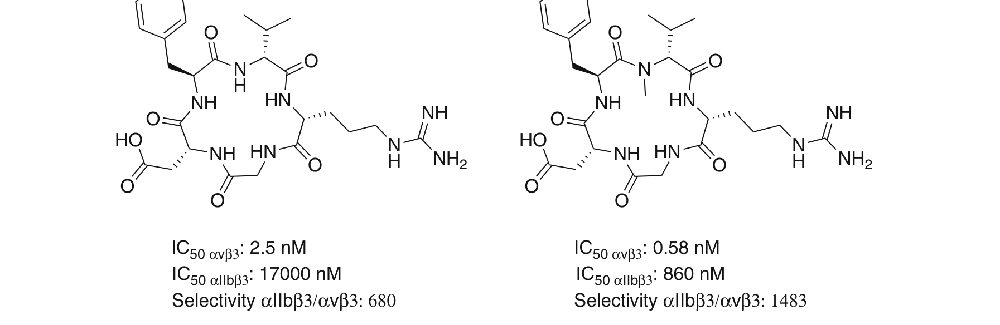
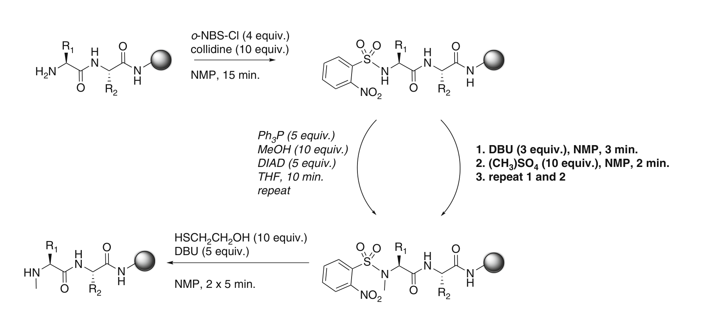
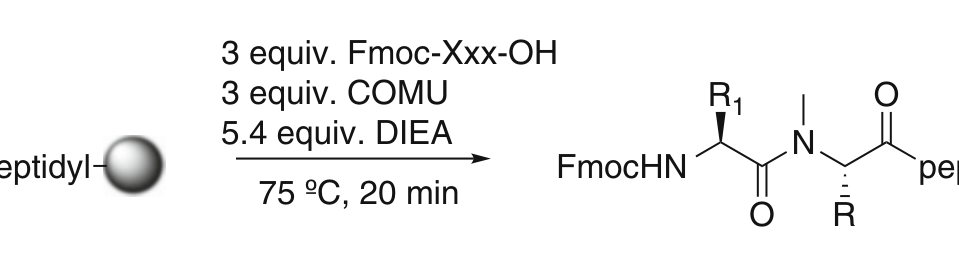

Chapter 10
N-甲基化肽的合成：树脂上甲基化与微波辅助偶联
原作者：Renée Roodbeen & Knud J. Jensen
来源：Methods in Molecular Biology, Vol. 1047 (2013)
翻译级别中文学习笔记
N-甲基化（N-Methylation）可以通过改善口服生物利用度（oral availability）和体内半衰期（in vivo half-life）来积极影响肽类化合物的药代动力学性质（pharmacokinetic properties）。此外，靶标亲和力（target affinity）和特异性（specificity）也可能得到提升。本章描述了使用直接烷基化（direct alkylation）方法的固相N-甲基化（solid-phase N-methylation）肽合成方案。该方法允许对合成的生物活性肽（bioactive peptides）进行快速的N-甲基扫描（N-methyl scan）。此外，还提供了一种微波增强（microwave-enhanced）方法，用于在甲基化N端上进行困难的偶联反应。
关键词（Key words）：
Solid-phase peptide synthesis（固相肽合成，SPPS）
N-methylation（N-甲基化）
N-methylated peptides（N-甲基化肽）
Pharmacokinetics（药代动力学）
Bioactive peptide（生物活性肽）
o-Nitrobenzenesulfonyl protecting group（邻硝基苯磺酰基保护基，o-NBS）
Difficult couplings（困难偶联）
Microwave heating（微波加热）
COMU（偶联试剂）
【要点总结】 N-甲基化能改善肽的药代动力学性质（口服吸收、半衰期），并可提高靶标选择性和特异性。本章的核心方法是：固相直接烷基化N-甲基化 + 微波辅助偶联，两者配合可高效合成N-甲基化肽。
生物活性N-甲基化肽（bioactive N-methylated peptides）通常从天然来源中分离得到，例如海绵（marine sponges）[1, 2]。研究表明，主链氮原子（backbone nitrogens）的甲基化会影响肽的构象（conformation），并可以增强受体选择性（receptor selectivity）和特异性（specificity）[3]。
N-甲基化在 designing 高活性的生长抑素类似物（somatostatin analogues）中非常有效：这些类似物改变了向生长抑素受体亚型2（somatostatin receptor subtype 2, sst₂）的选择性，从而减少了神经源性炎症（neurogenic inflammation）[4]。
N-甲基化影响活性和特异性的另一个重要例子是 Cilengitide，这是一种由 Kessler 及合作者发现、Merck-Serono 开发的小型环状甲基化肽，已被评估用于治疗胶质母细胞瘤（glioblastoma）[5, 6]。
如图1（Fig. 1）所示，通过对环状肽 c(RGDfV) 中一个残基（Val）的N-甲基化，即得到 c(RGDf-N(Me)V-)，对 αvβ3 整合素（integrin）的 IC₅₀ 值从 2.5 nM 降低至 0.58 nM，同时选择性（selectivity）比值 αIIbβ3/αvβ3 从 680 提高到 1483，表明甲基化不仅提高了活性，还大幅改善了受体选择性。

图1 (Fig. 1) N-甲基化对环状肽 c(RGDfV) 的 IC₅₀ 值和受体特异性的影响。左图：非甲基化肽；右图：Val残基N-甲基化后的 c(RGDf-N(Me)V-)，即Cilengitide肽，显示了改善的活性和选择性。
【要点总结】 Cilengitide案例：仅甲基化一个残基（Val），αvβ3 IC₅₀ 从2.5→0.58 nM，选择性比值从680→1483。这展示了N-甲基化在优化肽药物活性与选择性方面的巨大潜力。
为了测试N-甲基化在特定肽合成中是否有利，可以引入 Fmoc-N(甲基)-氨基酸（Fmoc-N(methyl)-amino acid）构建单元。然而，大多数这类构建单元价格昂贵，或者需要在严苛条件下从标准氨基酸通过液相合成（solution-phase synthesis）来制备 [7–9]。
因此，在选择性N-甲基化肽的合成中，树脂上N-甲基化（on-resin N-methylation）通常是首选方案。该方法所用的化学反应必须与 Fmoc-SPPS 兼容，以避免侧链保护基的提前脱保护和肽从树脂上的释放。
选择性单烷基化N端的首个方法由 Miller 和 Scanlan 描述，随后由 Kessler 及合作者进一步发展（图2，Fig. 2）[7, 10]。
树脂上N端的甲基化基于选择性单保护（selective mono-protection）和胺的活化（activation of the amine），随后通过直接烷基化（direct alkylation）或 Mitsunobu 化学进行甲基化，最后脱保护得到单甲基化的N端二级胺（secondary N-terminal amine）[7, 11]。

图2 (Fig. 2) 树脂上肽N-甲基化的示意图，改编自 Chatterjee 等 [11]。第一步：用 o-NBS-Cl 保护并活化一级胺。第二步：通过直接烷基化（方法B，粗体）或 Mitsunobu 化学（方法A，斜体）进行甲基化。最后：用2-巯基乙醇（2-mercaptoethanol）和DBU去除磺酰胺，得到N端单甲基化肽。
【要点总结】 N端甲基化三步走策略：(1) o-NBS保护/活化 → (2) 烷基化（直接烷基化或Mitsunobu）→ (3) 脱保护。首选固相方法因其避免昂贵的预甲基化氨基酸构建单元。
关于第一步（即o-NBS保护步骤），已有多篇报道在不同碱（base）、溶剂（solvent）和反应时间（reaction time）方面进行了优化 [8, 10, 12]。然而，所有方法的共同点是使用 o-NBS（邻硝基苯磺酰基）作为瞬态保护基（transient protecting group）。选择该基团的原因包括：
能够活化N端以进行烷基化（activate the N terminus for alkylation）
不会形成磺酰烯（sulfenes）
可通过2-巯基乙醇（2-mercaptoethanol）和DBU方便地去除
对于第二步甲基化，有两种方法可供选择：
(1) 直接烷基化（Direct alkylation）：使用烷基卤化物（alkyl halides）或硫酸二甲酯（dimethyl sulfate, (CH₃)₂SO₄）。该方法操作直接，但烷基化试剂通常具有致癌性（carcinogenic），且对Cys和His残基来说，N端甲基化较为困难，因为这些残基容易发生侧链烷基化（side-chain alkylation）。
(2) Mitsunobu化学烷基化：使用MeOH。对于容易发生侧链烷基化的残基，推荐使用Mitsunobu化学 [8]。尽管需要干燥的反应条件（dry reaction conditions），Mitsunobu化学也适用于peptoids（类肽）的合成，因为有大量合适的商品化一级醇（primary alcohols）可供选择 [12]。
最后，烷基化后，用2-巯基乙醇和碱处理去除o-NBS基团 [8, 10, 12]。最初推荐使用苯硫酚（thiophenol），因为它能更快地裂解磺酰胺且毒性低于2-巯基乙醇 [10]。然而，苯硫酚可能导致酯水解（ester hydrolysis）（当肽通过酯键锚定在树脂上时），从而导致肽从树脂上释放，产生肽酸（peptide acids）[12]。磺酰胺的水解可通过监测2-(2-硝基苯硫基)乙醇（2-(2-nitrophenylthio)ethanol）的释放来判断，该副产物具有强烈的黄色（strong yellow color）。
【要点总结】 两种甲基化路线对比： • 直接烷基化：快、不需换溶剂、适合自动化，但试剂致癌、Cys/His易侧链烷基化 • Mitsunobu：需无水条件、可避免侧链烷基化、适合peptoid合成 o-NBS去除：优先用2-巯基乙醇/DBU（避免thiophenol导致的酯水解和肽释放）
对N-甲基化肽进行偶联，即N-酰化（N-acylation），可能非常困难，可能需要苛刻或昂贵的试剂，加上很长的偶联时间才能获得满意的引入率 [13–16]。
微波加热（microwave heating）已成为肽合成中的强大工具，在N-甲基化肽的合成中也证明了自己的价值 [15, 17, 18]。此外，多种偶联试剂（coupling reagents）已报道与微波辅助偶联联用，例如 DIC/HOAt、HATU 和 COMU [19, 20]。
本课题组最近证实，偶联产率很大程度上取决于N-甲基化残基的侧链（side chain）以及偶联到甲基化N端上的氨基酸 [21]。例如，我们发现：
偶联到空间位阻较小（sterically nondemanding）的残基如 MeGly 时，可完全转化（full conversion）
偶联到 MeIle 时，在室温下非常困难 [17, 18]
幸运的是，使用微波加热配合 HATU 或 COMU 作为偶联试剂可以大幅改善偶联产率。此外，微波加热不仅能提高产率和纯度，还能缩短非甲基化和N-甲基化肽的合成时间 [17, 20, 21]。
【要点总结】 N-甲基化后的偶联是合成瓶颈：二级胺空间位阻大，偶联困难。 解决方案：微波加热（75°C, 20 min）+ COMU或HATU偶联试剂。 偶联难易取决于：N-甲基化残基的侧链位阻 + 待偶联氨基酸的大小。 MeGly（容易）→ MeIle（室温下极困难）→ 微波辅助解决。
所有溶液须使用肽级NMP（peptide-grade NMP）和最高纯度的其他试剂现配（freshly prepared）。
TentaGel with Rink amide linker（TentaGel R RAM 树脂），loading：0.24 mmol/g
1-Methyl-2-pyrrolidine（1-甲基-2-吡咯烷酮，NMP）
N,N-Dimethylformamide（N,N-二甲基甲酰胺，DMF）
Dichloromethane（二氯甲烷，DCM）
N,N-Diisopropylethylamine（N,N-二异丙基乙基胺，DIEA）
Trifluoroacetic acid（三氟乙酸，TFA）
Triethylsilane（三乙基硅烷，TES）
COMU — 1-[(1-(Cyano-2-ethoxy-2-oxoethylideneaminooxy)-dimethylamino-morpholino-methylene)]methanaminium hexafluorophosphate
以下溶液配制量适用于1.3 mmol（或13 × 0.1 mmol）TentaGel树脂（0.24 mmol/g loading）。
溶液A（Solution A）：4 equiv. o-NBS-Cl + 10 equiv. collidine（可力丁）溶于NMP。
配制20 mL方法：在50 mL Falcon管中称取1.182 g o-NBS-Cl，加NMP至10 mL刻度，振荡溶解。加入1.76 mL collidine，用NMP定容至20 mL。
溶液B（Solution B）：3 equiv. DBU 溶于NMP。
配制20 mL方法：在50 mL Falcon管中加入598 μL DBU，用NMP定容至20 mL。
溶液C（Solution C）：10 equiv. dimethyl sulfate（硫酸二甲酯，CAUTION！⚠️）溶于NMP。
配制20 mL方法：在50 mL Falcon管中加入1.26 mL dimethyl sulfate（见注释1和3），用NMP定容至20 mL。
溶液D（Solution D）：10 equiv. 2-mercaptoethanol（2-巯基乙醇）+ 5 equiv. DBU 溶于NMP。
配制20 mL方法：在50 mL Falcon管中加入938 μL 2-mercaptoethanol（见注释4），加NMP至15 mL。然后加入996 μL DBU，用NMP定容至20 mL。
【要点总结】 关键试剂： • 树脂：TentaGel R RAM (0.24 mmol/g) • 溶剂：NMP（主）、DMF、DCM • 4种核心溶液：A(o-NBS-Cl/collidine) → B(DBU) → C(Me₂SO₄) → D(mercaptoethanol/DBU) • 偶联试剂：COMU + DIEA ⚠️ 硫酸二甲酯剧毒致癌，必须在通风橱中操作！
通过本流程，N端将被 o-NBS-Cl 保护并同时活化。此后，通过用DBU和硫酸二甲酯处理树脂进行甲基化。除Cys和His外，所有氨基酸均优先采用直接烷基化方法（direct alkylation），因为该过程更快且不需要更换溶剂。因此，直接烷基化方法适用于在肽合成仪上进行自动合成。最后，用2-巯基乙醇去除o-NBS保护基，得到单甲基化的N端（示意图见图2，烷基化步骤即粗体标注的方法B）。
所有步骤均在室温（room temperature）下进行。
规模：0.1 mmol；树脂loading：0.24 mmol/g（TentaGel）[16]
步骤1：将树脂置于装有聚乙烯滤板（polyethylene filter）的10 mL注射器中。
步骤2：用两倍树脂床体积（resin bed volume）的NMP将树脂溶胀（swell）15分钟（见注释5）。
步骤3：排干溶液，用两倍树脂床体积的NMP洗涤一次。
步骤4：向树脂中加入1.5 mL 溶液A（Solution A），振荡（agitate）15分钟。
步骤5：排干溶液。
步骤6：用两倍树脂床体积的NMP洗涤树脂5次。
步骤7：如有需要，可进行Kaiser测试（Kaiser test）（见注释6）以检查o-NBS保护是否完全。
步骤8：向树脂中加入1.5 mL 溶液B（Solution B），振荡3分钟。
步骤9：向树脂中加入1.5 mL 溶液C（Solution C）（见注释3和7），再振荡2分钟。
步骤10：排干溶液（见注释7），用约4 mL NMP（约两倍树脂床体积）洗涤树脂一次。
步骤11：重复步骤8–10。
步骤12：用两倍树脂床体积的NMP洗涤树脂5次。
步骤13：如有需要，可进行测试裂解（test cleavage）以检查烷基化是否完全（见注释8）。
步骤14：向树脂中加入1.5 mL 溶液D（Solution D）（见注释4），振荡5分钟。
步骤15：排干溶液，用两倍树脂床体积的NMP洗涤树脂一次。
步骤16：重复步骤14和15。
步骤17：用两倍树脂床体积的NMP洗涤树脂5次。
步骤18：所有反应和洗涤步骤的滤液应妥善废弃处理（见注释7）。
【要点总结】 N-甲基化操作流程核心（共18步）： ① 溶胀树脂(NMP, 15min) → ② o-NBS保护(溶液A, 15min) → ③ 甲基化(溶液B+C, 重复两次) → ④ 去保护(溶液D, 重复两次) → 每步间充分NMP洗涤 关键：步骤8-11(DBU + Me₂SO₄)需重复一个循环以确保完全甲基化 全程室温操作
规模：0.025 mmol；树脂loading：0.24 mmol/g（TentaGel）
我们使用 Biotage Initiator™ 进行微波加热，或备选 Biotage SyroWave™（见注释9）。
在甲基化N端上的偶联——即对一个空间位阻（sterically hindered）的二级胺（secondary amine）进行偶联——可能非常困难，通常伴随着较低的偶联产率。在此我们描述使用微波加热结合偶联试剂COMU来获得高偶联产率的方法，反应时间仅为20分钟（图3，Fig. 3）。

图3 (Fig. 3) Fmoc-氨基酸偶联到N-甲基化肽树脂上的示意图。使用3 equiv.氨基酸、偶联试剂COMU和5.4 equiv.碱DIEA，75°C反应20分钟，对大多数偶联可获得满意的引入率。
步骤1：将树脂置于0.5或2.0 mL玻璃Biotage微波瓶（microwave vial）中（见注释10）。
步骤2：加入合适的磁力搅拌子（magnetic stirring bar）（见注释11）。
步骤3：称取氨基酸（3 equiv.）和偶联试剂（COMU, 3 equiv.），置于1.5 mL Eppendorf管中。
步骤4：加入400 μL DMF，振荡溶解试剂，使氨基酸和偶联试剂的终浓度约为0.18 M。
步骤5：加入5.4 equiv. DIEA，轻轻摇动Eppendorf管混合。
步骤6：将混合液直接加到树脂上，用合适的盖子将微波瓶密封。
步骤7：将瓶子放入微波腔中，在不外加冷却的条件下进行照射。微波设置（见注释9和12）：
微波参数设置：
| 温度 (Temperature) | 75 °C |
|---|---|
| 反应时间 (Reaction time) | 20 min |
| 预搅拌 (Pre-stirring) | 5 s |
| 吸收水平 (Absorption level) | Very high（非常高） |
| 搅拌速度 (Stirring speed) | 600 rpm |
样品将以约60 W的功率进行照射。
步骤1：反应20分钟后，取下盖子，向树脂溶液中加入2 mL DCM。然后将溶液转移至装有聚乙烯滤板的5 mL注射器中（见注释13）。
步骤2：用NMP（2 mL）洗涤树脂4次。
步骤3：进行测试裂解（test cleavage）以检查引入是否完全（见注释14）。
步骤4：如需要，重复偶联步骤1–10。
【要点总结】 微波偶联核心条件： • 试剂：3 equiv. Fmoc-AA-OH + 3 equiv. COMU + 5.4 equiv. DIEA • 溶剂：DMF (400 μL)，终浓度~0.18 M • 微波：75°C, 20 min, ~60 W, absorption: very high • 后处理：DCM稀释→转移注射器→NMP洗4次→测试裂解→必要时重复偶联 ⚠️ N-甲基化后无法用Kaiser test检测（二级胺不显色）
注释1：由于某些试剂的高危险性（highly hazardous nature），建议在一次性容器（disposable containers）如Falcon管中配制溶液。
注释2：所需溶液量取决于反应规模和树脂loading。此处提到的体积足够1.3 mmol（或13 × 0.1 mmol）TentaGel树脂（0.24 mmol/g loading）使用；此体积是确保树脂能充分溶胀和振荡所需的量。因此，请根据树脂类型和loading调整溶液A–D中试剂的浓度和体积。
注释3：⚠️ 硫酸二甲酯（dimethyl sulfate）是非常危险的试剂和已知致癌物（known carcinogen）。仅在通风橱（fume hood）内操作该试剂、含该试剂的溶液和所有废液。必须避免吸入和皮肤接触。穿戴全套防护服、护目镜和手套。如果含有硫酸二甲酯的溶液溢出，请立即丢弃手套。有关更多信息，请查阅MSDS数据表。
注释4：2-巯基乙醇（2-mercaptoethanol）具有非常难闻的气味。准备好一杯家用氯水溶液（bleach:water = 1:1）以防溢出。所有一次性物品和玻璃器皿（Falcon管、移液管等）在废弃前须用氯水溶液洗涤。
注释5：对于0.1 mmol TentaGel树脂，树脂床体积约为3 mL。因此，用两倍树脂床体积洗涤时使用6 mL NMP。根据树脂类型和用量调整体积。
注释6：Kaiser测试的操作流程见Chapter 2。
注释7：此时总体积为3 mL，溶液B和D中试剂的最终浓度减半。然而，这样做是为了允许在步骤9中充分的溶胀和振荡。
注释8：滤液中含有过量的硫酸二甲酯；以适当方式废弃。用于收集滤液的容器需用丙酮（acetone）洗涤三次，以去除残留的硫酸二甲酯。
注释9：对于测试裂解（test cleavage）：从反应器中取出少量树脂，用DCM洗涤3次，彻底干燥后用TFA:TES:H₂O (95:2.5:2.5)在室温处理2小时。在氮气流下除去TFA，用乙醚（ether）研磨沉淀肽。离心并除去乙醚后，将肽溶于MeCN/H₂O混合液中，通过LC-MS分析。
注释10：可使用其他微波反应器；但务必调整设置以对应3.2节（步骤1、2和7）中描述的设置。家用微波炉（domestic microwave ovens）不适用，使用可能危险。如无实验室微波仪器，可考虑使用加热振荡器（heater-shaker）加热。
注释11：树脂在用DCM洗涤两次并通过抽吸干燥5分钟后，易于转移。
注释12：我们使用小型三角形磁子，因为我们发现这种类型的磁子会在树脂溶液中弹跳，而不是研磨树脂颗粒。
注释13：我们将吸收水平设为"非常高（very high）"，以避免在初始加热期间温度超出设定值。
注释14：在转移树脂时，部分树脂可能附着在微波瓶的玻璃表面上。这些树脂颗粒可能未参与反应，应在加入DCM之前用刮刀或棉签除去，以避免混合已反应和未反应的树脂珠。
注释15：由于N端被甲基化，因此是二级胺（secondary amine），Kaiser测试不能用于检测后续氨基酸的引入是否完全。
【要点总结】 关键注意事项： • 硫酸二甲酯：剧毒致癌，严格通风橱操作，废液特殊处理 • 2-巯基乙醇：恶臭，用氯水处理废弃物 • Kaiser test不适用于N-甲基化（二级胺），需用test cleavage + LC-MS监控 • 微波瓶壁上的树脂需用棉签清除（避免混合已反应/未反应树脂） • 家用微波炉绝对不可用于实验！ • 三角形磁子优于圆形（避免研磨树脂颗粒）
1. Fusetani N, Matsunaga S (1993) Bioactive sponge peptides. Chem Rev 93:1771–1791
2. Wipf P (1995) Synthetic studies of biologically active marine cyclopeptides. Chem Rev 95:2115–2134
3. Gilon C, Dechantsreiter MA, Burkhart F, Friedler A, Kessler H (2002) Synthesis of peptides and peptidomimetics. In: Goodman M, Felix A, Moroder L, Tonolio C (eds) Houben-Weyl methods of organic chemistry. Georg Thieme, Stuttgart, pp 215–291
4. Chatterjee J, Laufer B, Beck JG, Helyes Z, Pinter E, Szolcsanyi J, Horvath A, Mandl J, Reubi JC, Keri G, Kessler H (2011) N-methylated sst₂ selective somatostatin cyclic peptide analogue as a potent candidate for treating neurogenic inflammation. ACS Med Chem Lett 2:509–514
5. Mas-Moruno C, Rechenmacher F, Kessler H (2010) Cilengitide: the first anti-angiogenic small molecule drug candidate. Design, synthesis and clinical evaluation. Anticancer Agents Med Chem 10:753–768
6. Desgrosellier JS, Cheresh DA (2010) Integrins in cancer: biological implications and therapeutic opportunities. Nat Rev Cancer 9:9–22
7. Biron E, Chatterjee J, Kessler H (2006) Optimized selective N-methylation of peptides on solid support. J Pept Sci 12:213–219
8. Biron E, Kessler H (2005) Convenient synthesis of N-methylamino acids compatible with Fmoc solid-phase peptide synthesis. J Org Chem 70:5183–5189
9. Govender T, Arvidsson PI (2006) Facile synthesis of Fmoc-N-methylated alpha- and beta-amino acids. Tetrahedron Lett 47:1691–1694
10. Miller SC, Scanlan TS (1997) Site-selective N-methylation of peptides on solid support. J Am Chem Soc 119:2301–2303
11. Chatterjee J, Gilon G, Hoffman A, Kessler H (2008) N-methylation of peptides: a new perspective in medicinal chemistry. Acc Chem Res 41(10):1331–1342
12. Reichwein JF, Liskamp RMJ (1998) Site-specific N-alkylation of peptides on the solid-phase. Tetrahedron Lett 39:1243–1246
13. Sabatino G, Mulinacci B, Alcaro M, Chelli M, Rovero P, Papini P (2002) Assessment of new 6-Cl-HOBt based coupling reagents for peptide synthesis. Part 1: coupling efficiency study. Int J Pept Res Ther 9:119–123
14. Kaminski ZJ, Kolesinska B, Kolesinska J, Sabatino G, Chelli M, Rovero P, Blaszczyk M, Glowka ML, Papini AM (2005) N-triazinylammonium tetrafluoroborates. A new generation of efficient coupling reagents useful for peptide synthesis. J Am Chem Soc 127:16912–16920
15. Teixido M, Albericio F, Giralt E (2005) Solid-phase synthesis and characterization of N-methyl rich-peptides. J Pept Res 65:153–166
16. Chatterjee J, Laufer B, Kessler H (2012) Synthesis of N-methylated cyclic peptides. Nat Protoc 7:432–444
17. Rodriguez H, Suarez M, Albericio F (2010) A convenient microwave-enhanced solid-phase synthesis of short chain N-methyl-rich peptides. J Pept Sci 16:136–140
18. Pedersen SL, Mehrotra A, Jensen KJ (2010) In: Lebl M, Meldal M, Jensen KJ, Hoeg-Jensen T (eds) Proceedings of the 31st European peptide symposium, San Diego, USA. Prompt Scientific Publishing
19. Pedersen SL, Tofteng AP, Malik L, Jensen KJ (2011) Microwave heating in solid-phase peptide synthesis. Chem Soc Rev 41:1826–1844
20. Malik L, Tofteng AP, Pedersen SL, Sørensen KK, Jensen KJ (2010) Automated "X-Y" robot for peptide synthesis with microwave heating: application to difficult peptide sequences and protein domains. J Pept Sci 16:506–512
21. Roodbeen R, Pedersen SL, Hosseini M, Jensen KJ (2012) Microwave heating in solid-phase synthesis of N-methylated peptides: when is room temperature better? Eur J Org Chem (36):7106–7111.
| 术语 (Term) | 说明 (Description) |
|---|---|
| N-Methylation（N-甲基化） | 在肽主链氮原子上引入甲基（-CH₃），将NH变为N-CH₃，影响构象和药代动力学性质。 |
| o-NBS（邻硝基苯磺酰基） | o-Nitrobenzenesulfonyl group，用作N端的瞬态保护/活化基团。优点：活化N端、不形成磺酰烯、易被2-巯基乙醇/DBU去除。 |
| Direct alkylation（直接烷基化） | 使用硫酸二甲酯（Me₂SO₄）或烷基卤化物直接对活化的N端进行甲基化。快速、不需换溶剂，适合自动化。 |
| Mitsunobu化学 | 使用MeOH、PPh₃、DIAD进行的烷基化反应。需无水条件，适用于Cys/His和peptoid合成。 |
| COMU | 1-[(1-(Cyano-2-ethoxy-2-oxoethylideneaminooxy)-dimethylamino-morpholino-methylene)]methanaminium hexafluorophosphate，高效肽偶联试剂，与微波加热配合效果优异。 |
| Microwave heating（微波加热） | 利用微波能量加速肽合成反应。可提高产率和纯度，缩短反应时间（20 min vs. 数小时）。 |
| Cilengitide | c(RGDf-N(Me)V) 环肽，由Kessler团队开发的抗血管生成小分子药物，用于治疗胶质母细胞瘤。是N-甲基化优化肽活性的经典案例。 |
| Somatostatin analogues | 生长抑素类似物，N-甲基化可改变受体亚型选择性（如sst₂），减少神经源性炎症。 |
| Fmoc-SPPS | Fluorenylmethyloxycarbonyl-based Solid-Phase Peptide Synthesis，基于Fmoc保护基的固相肽合成策略。 |
| TentaGel R RAM | 一种常用的固相合成树脂，带有Rink amide linker，用于合成C端酰胺肽。 |
| Kaiser test | 茚三酮显色测试，用于检测一级胺（游离N端）。不适用于N-甲基化的二级胺。 |
| DBU | 1,8-Diazabicyclo[5.4.0]undec-7-ene，强碱，在N-甲基化中用作催化剂（活化步骤）和脱保护步骤。 |